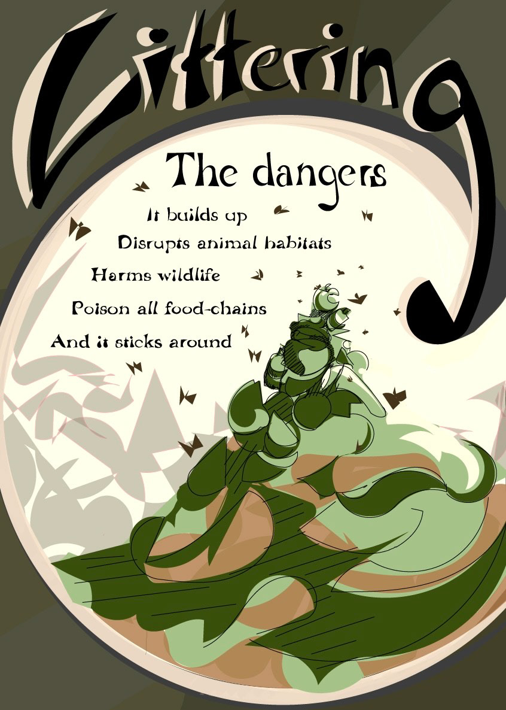
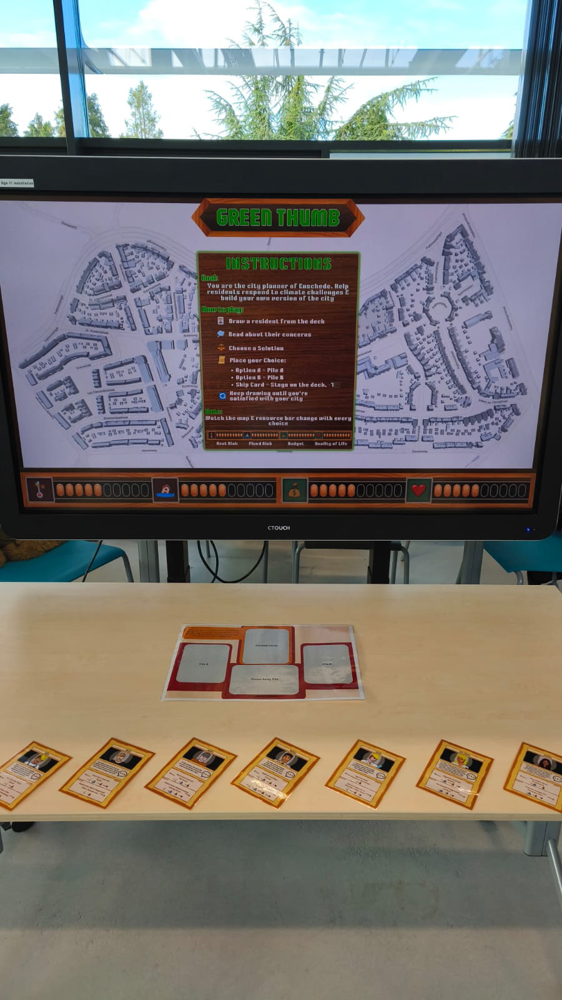
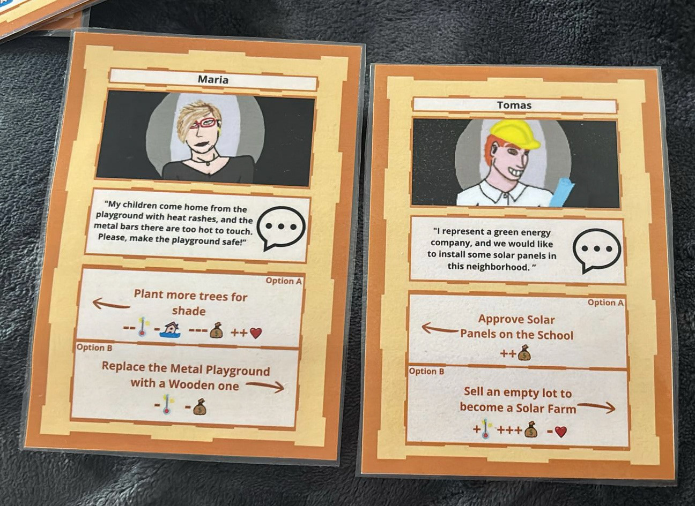

Creative Technology Projects
A Poster on Littering
In year one, module one, of my study in Creative Technology I created a informational poster. The topic I decided on was littering. See the poster below.

A Digital Twin Interface for Urban Planning
In module 3 of Creative Technology I participated in the group project "Grean Thumb" and together we tried to find a solution for our client. A solution to make digital twins more inclusive of citicen opinions, so that urban planners can more easily consider citizens' thougths when changing and building our cities.
In the end we built a game where users are presented with character cards and a map of Pathmos, the most affected area in Enschede by flooding. The character cards present the user with a citizen issue, and a few option on how to solve it. Each option has it own pros and cons, and these will be reflected in our four point bars. The point bars represents overall flood risk, ovrall heat risk and overall budged left and the overall happiness of the citizen of Pathmos. We aimed to create a game where it would be visible what citisen think is most important when it comes to resourses. Below you can find some pictures of the final game prototype.

